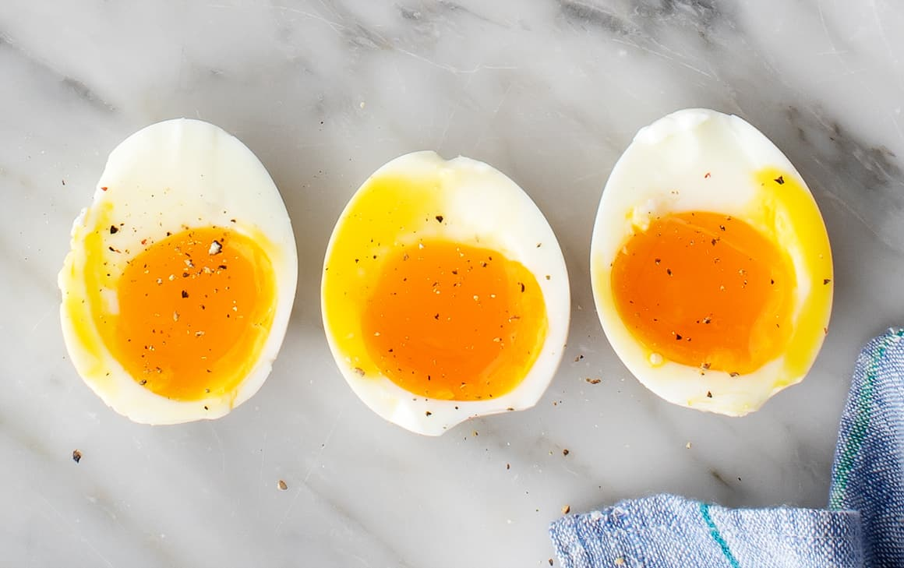

Soft Boiled Eggs

The perfect way to make perfect soft boiled eggs with beautiful jammy yolks
Ingredients
Steps
- Bring a pot of water to a gentle boil on medium-high heat. The water shouldn't be bubbling vigorously to prevent the eggs from cracking when placed in the pot.
- Then, use a slotted spoon to gently lower the eggs into the boiling water and set a timer for 6 minutes and 30 seconds.
- While the eggs are boiling, prepare an ice bath. Once the timer goes off, take the eggs out of the boiling water and immediately place them in the ice bath to stop the cooking process.
Back to index